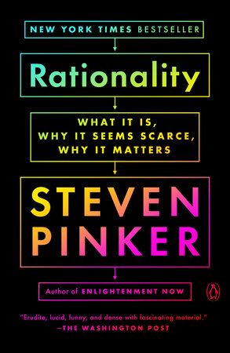
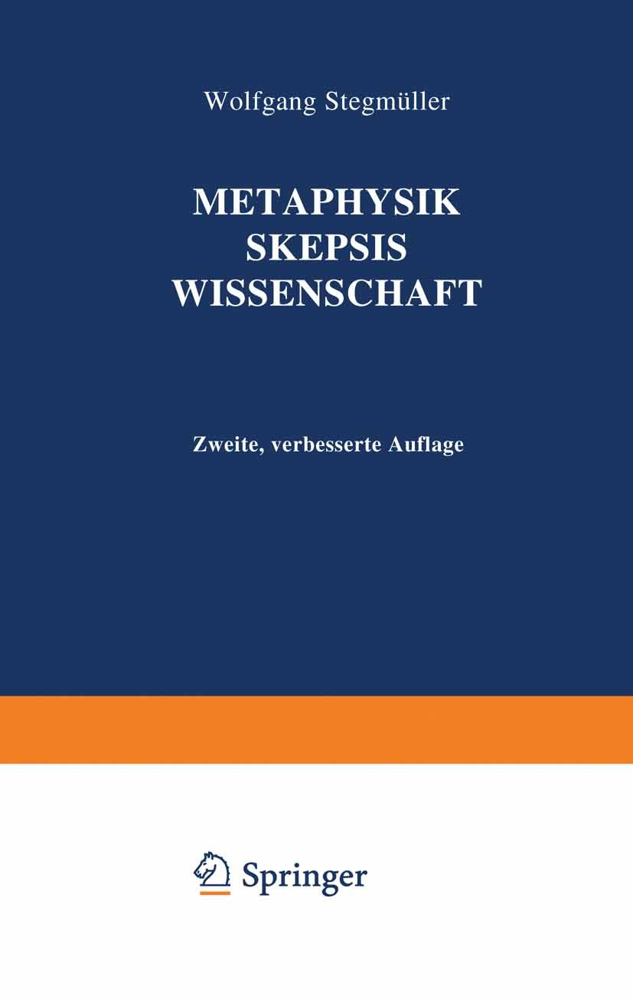
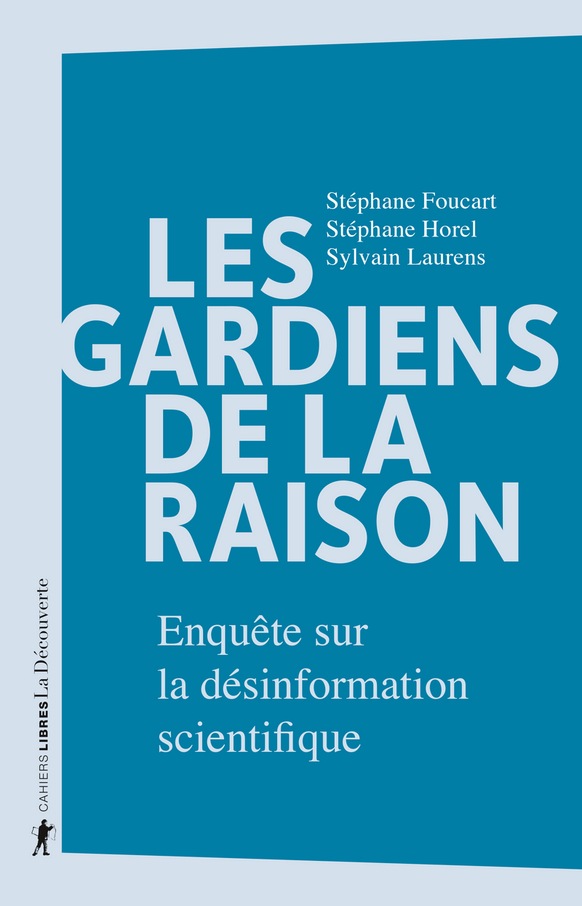

1:10:56 · 14 OPERE
Scienza e immaginazione.
Il filo del discorso
Il video interroga il rapporto fra conoscenza scientifica, immagini del mondo e autorità pubblica. Il relatore contesta una fiducia nella scienza ridotta ad adesione allo scienziato televisivo e collega la polemica sanitaria a una trasformazione culturale più ampia. La televisione educativa, Eco, la discussione su Platone e i documenti fondativi americani introducono il problema della formazione del cittadino e della capacità di discutere le premesse di un discorso.
Leggi la sintesi completaRiduci la sintesi
Il centro filosofico è la distinzione fra comprendere e ottenere un risultato. La definizione strumentale della razionalità attribuita a Pinker è confrontata con Russell, con Talete deriso dalla giovane tracia e con il professor Laurana di Sciascia. Il relatore legge questi esempi come segni di una società che premia l’adattamento e considera inutile o ingenua la ricerca disinteressata. Stegmüller e una pagina di Sombart conducono poi alle domande sulla metafisica, alla possibilità delle leggi sociali e alla differenza fra osservazioni ripetute e spiegazioni. La conclusione torna su manipolazione, libertà, università e interessi economici, richiamando University, Inc., Les gardiens de la raison e alcuni libri dell’autore. La scheda mantiene attribuite le accuse e le valutazioni politiche e sanitarie, corregge la confusione fra Dichiarazione e Costituzione americana e distingue incompletezza logica, prova per assurdo e caricatura di una tesi. La fallibilità scientifica non viene usata per affermare che tutte le ipotesi abbiano lo stesso valore o che gli studi comparativi di efficacia siano impossibili. Titoli e citazioni non identificabili rimangono dichiarati, senza colmare le lacune del riconoscimento vocale.
I libri nel discorso

Dichiarazione d’indipendenza degli Stati Uniti d’America
Note sul riferimento
Facsimile: incisione di Stone del 1823: Documento del 4 luglio 1776 · incisione di William J. Stone del 1823
Riproduzione documentaria dell’incisione di Stone del 1823 conservata dai National Archives. Non è la pergamena originale del 1776, né la copertina di un libro.
Il relatore nomina la Dichiarazione d’indipendenza ma la affianca a We the People. Sono documenti diversi: la formula appartiene al preambolo della Costituzione, registrata separatamente.

Costituzione degli Stati Uniti d’America
Identificazione probabile
Note sul riferimento
Copertina della raccolta: Testo firmato il17settembre1787. Per l’immagine si usa la raccolta Penguin Classics The Federalist Papers, ISBN 9780140444957, che dichiara di includere il testo della Costituzione; non è una fotografia della pergamena originaria.
Copertina autentica di The Federalist Papers: la descrizione editoriale attesta che la raccolta comprende il testo completo della Costituzione. Non è il frontespizio costituzionale del 1787 e Hamilton, Madison e Jay non sono presentati come unici autori del documento.
We the People identifica il preambolo della Costituzione del 1787, benché il relatore dica Dichiarazione d’indipendenza. Correzione documentale riscontrata presso National Archives.

Fenomenologia di Mike Bongiorno
Note sul riferimento
Copertina della raccolta Diario minimo che contiene il saggio: Copertina della raccolta Diario minimo, Bompiani, ISBN 9788845274886; catalogo Giunti:12 marzo 2001,160 pagine. Il record Braidense descrive la18a edizione 2013 con153 pagine. Si dichiara la divergenza fra catalogazioni e ristampe; la copertina è quella attualmente associata al titolo dall’editore. La raccolta uscì nel 1963.
Fenomenologia di Mike Bongiorno è un breve saggio della raccolta, non un autonomo libro su Bongiorno. L’ISBN e la copertina sono della raccolta.
Umberto Eco e Fenomenologia di Mike Bongiorno sono nominati esplicitamente.

Rationality: What It Is, Why It Seems Scarce, Why It Matters
Identificazione probabile
Note sul riferimento
Copertina editoriale autentica · edizione di riferimento: Penguin Books · paperback 27 settembre 2022 · ISBN 9780525562016; opera del 2021
La copertina è della successiva edizione paperback ufficiale, non di una copia materialmente identificata nel video. La definizione strumentale è distinta da una prescrizione morale o dall’approvazione dell’eugenetica.
Pinker, un libro sulla razionalità e la definizione in inglese che riappare nel colloquio FAIR su Rationality identificano probabilmente il volume. Non affermata la lettura integrale del libro da parte del redattore.

Elogio dell’ozio (In Praise of Idleness)
Note sul riferimento
Copertina della raccolta che contiene il saggio: Longanesi · raccolta Elogio dell’ozio · 2004 · traduzione di Elisa Marpicati
Copertina della raccolta italiana omonima di quindici saggi, Longanesi, 2004. Il saggio annunciato è del 1932; non si attribuisce al filmato questa specifica edizione.
Russell ed Elogio dell’ozio sono nominati nella critica della razionalità orientata esclusivamente al risultato.

Teeteto, o sulla scienza
Identificazione probabile
Note sul riferimento
Copertina: Feltrinelli · 1994 · traduzione di Luca Antonelli, introduzione di Salvatore Natoli, saggio di Davide Spanio
Immagine autentica dell’opera, controllata visivamente; l’edizione di riferimento non è attribuita al filmato.
L’aneddoto di Talete che cade nel pozzo mentre guarda il cielo e viene deriso da una giovane tracia rimanda al Teeteto 174a–b. Titolo non pronunciato: identificazione testuale probabile.

A ciascuno il suo
Identificazione probabile
Note sul riferimento
Copertina editoriale autentica · edizione di riferimento: Adelphi · gli Adelphi 162, 2000 · ISBN 9788845915147
Copertina autentica dell’edizione Adelphi di riferimento; il video non consente di stabilire la copia posseduta o letta. La paginazione varia secondo l’edizione.
Sciascia, professor Laurana e la frase conclusiva identificano probabilmente A ciascuno il suo; il titolo non viene pronunciato.

Metaphysik, Wissenschaft, Skepsis (poi Metaphysik, Skepsis, Wissenschaft)
Identificazione probabile
Note sul riferimento
Copertina editoriale autentica · edizione di riferimento: Springer · seconda edizione riveduta ©1969, ristampa/eBook 2012–2013 · e ISBN 9783642929908
Copertina ufficiale della seconda edizione con titolo riordinato Metaphysik Skepsis Wissenschaft, non copertina del primo volume Humboldt 1954 tenuto dal relatore. Differenza editoriale dichiarata. DOI assegnato alla seconda edizione digitale, non al volume 1954.
Stegmüller, Sammlung Die Universität, Francoforte, anni Cinquanta e il capitolo sulla metafisica convergono sull’opera del 1954. Titolo non pronunciato e tedesco fragile nella trascrizione automatica: identificazione probabile, senza ricostruire una citazione diplomatica.

Metafisiche del mondo
Note sul riferimento
Copertina: Copertina riprodotta nella recensione di Domenico Conversa
Il relatore nomina il proprio Metafisiche del mondo e ricorda il 1997.

Problemi filosofici della scienza
Note sul riferimento
Foto parziale del volume mostrato, da fotogramma a 896 s; edizione non determinata: Fotogramma nativo intero del filmato La filosofia è scienza (e la scienza è filosofia), a 896 secondi: fotografia del volume effettivamente mostrato, con titolo Problemi Filosofici della Scienza e autore Dr Divago leggibili. La mano copre parte inferiore/destra della coperta e alcuni segnalibri sporgono. Immagine parziale del volume nel suo contesto, non copertina editoriale autonoma, frontespizio o ricostruzione grafica. Nessun editore, ISBN o anno è leggibile; edizione della copia non determinata.
2011 deriva dalla bibliografia dell’autore e dalla presentazione in un altro contributo, non da questo fotogramma. L’immagine mostra anche il leggio e la lavagna; alcune zone della copertina sono coperte.
3210.34–3221.50 s, il relatore distingue il tema dei problemi filosofici della scienza da un proprio contributo con testo intitolato così; titolo a 3217.52 s. La locuzione è sentito la propria è una deformazione della trascrizione automatica, non una trascrizione diplomatica corretta su ascolto.

University, Inc.: The Corporate Corruption of Higher Education
Note sul riferimento
Copertina: Basic Books, brossura del 22 agosto 2006, ISBN 9780465090525, con una nuova introduzione dell’autrice. Prima edizione del 2005; il catalogo Wellcome registra il sottotitolo The Corporate Corruption of American Higher Education.
Immagine autentica dell’opera, controllata visivamente; l’edizione di riferimento non è attribuita al filmato.
University, Inc. è nominato esplicitamente. L’autrice è Jennifer Washburn; il libro non prova ogni accusa sanitaria formulata nel video.

Les gardiens de la raison. Enquête sur la désinformation scientifique
Note sul riferimento
Copertina editoriale autentica · edizione di riferimento: La Découverte · Cahiers libres, 24 settembre 2020 · ISBN 9782348046155
Copertina autentica del cartaceo 2020, non dell’edizione tascabile successiva. I tre autori sono distinti da eventuali curatori; edizione materialmente usata nel video non accertata.
Titolo francese e sottotitolo sono riconoscibili. Corretto il numero degli autori: sono Foucart, Horel e Laurens, non due curatori.

La società del contrario
Note sul riferimento
Copertina: Zambon · 2005
Copertina autentica dell’edizione di riferimento, controllata visivamente. Non identifica l’esemplare letto o citato nel video.
Il relatore ricorda La società del contrario e distingue pubblicazione e copyright.

The Empty Campus
Note sul riferimento
Copertina: Lulu · edizione inglese di riferimento
Immagine associata all’ISBN di riferimento e controllata visivamente; edizione e traduzione non identificate come quelle citate o lette nel video.
The Empty Campus è nominato nella chiusura sui testi dell’autore.
Fonti e approfondimenti (21)
- calteches.library.caltech.edu ↗
- classics.mit.edu ↗
- classics.mit.edu ↗
- drdivagoscave.blogspot.com ↗
- homepage.univie.ac.at ↗
- independent.academia.edu ↗
- katalog.slub-dresden.de ↗
- link.springer.com ↗
- link.springer.com ↗
- news.fairforall.org ↗
- plato.stanford.edu ↗
- science.nasa.gov ↗
- viv-it.org ↗
- amicisciascia.it ↗
- archives.gov ↗
- archives.gov ↗
- editionsladecouverte.fr ↗
- nobelprize.org ↗
- raiplay.it ↗
- uibk.ac.at ↗
- who.int ↗